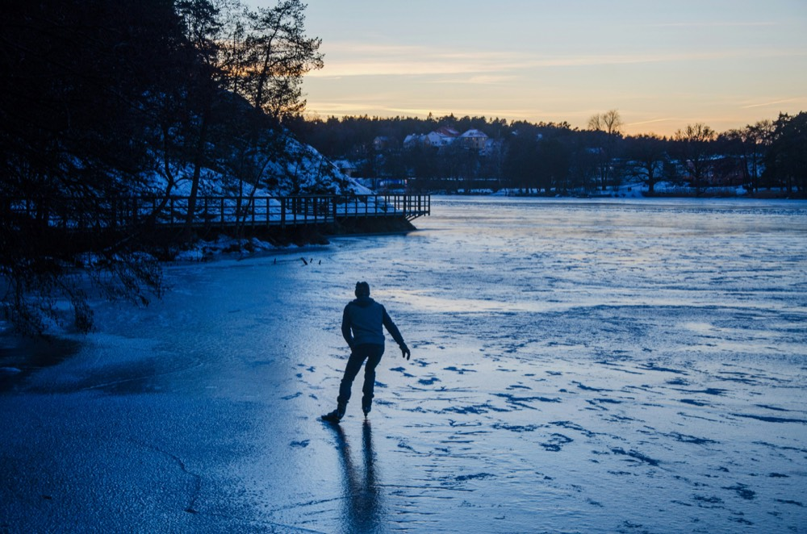

Reiseinformasjon
Hvordan en dag på naturis forløper, hva du tar med, og hvordan påmelding og betaling fungerer.
Hos Novakse skøyter du på naturis gjennom fantastiske vinterlandskap. Med små grupper, personlig veiledning og komfortabel overnatting.
Denne informasjonen gjelder for alle turer. Det som varierer per reisemål — overnatting, datoer og pris — står på siden til den aktuelle turen.
Se turene
Isen bestemmer hvor vi drar
Skøyteturene våre er alltid avhengige av værforholdene og iskvaliteten. Vi tilpasser ruter og programmer daglig, og om nødvendig går vi over til en annen egnet sjø eller tilbyr et alternativt program.
Det betyr også: ingen dag er lik, og ingen kan love på forhånd nøyaktig hvor du kommer til å kjøre.
Du velger hvor mange timer du står på isen
Rekreativt
Rolig tempo, god tid til pauser og til å se deg omkring.
Sportslig
Kjøre videre med pauser, lengre distanser på en dag.
Fanatisk
Lange dager på isen, for deg som virkelig vil kjøre mange kilometer.
Hva du tar med selv
- Ditt eget skøyteutstyr — for naturis anbefaler vi langrennsskøyter
- Vinterklær du kan være ute i en hel dag
- Sikkerhetsutstyr: isbrodder og hjelm er obligatorisk
På forhånd får du en pakkeliste og råd om hva du trenger.
Godt å vite
- En tur går som planlagt fra 4 deltakere og har maksimalt 12
- Eventuelle prisendringer får du vite om minst 4 uker før avreise
- Klager sender du skriftlig senest 14 dager etter avsluttet tur; du får svar innen 14 dager
Er du usikker på om skøytene dine er egnet? Joey ser gjerne på dem.
Halvparten på forhånd, resten fem uker før avreise.
For alle turer gjelder et depositum på 50 % av reisesummen. Resten betaler du senest 5 uker før avreise. Ved Orsa og Falun melder du deg på to og to; drar du med din egen gruppe, velger dere selv datoen.
Ved bestilling
50 % av reisesummen som depositum.
5 uker før avreise
Det resterende beløpet må da være betalt.
Ved avbestilling
Mer enn 6 uker i forveien: 50 % av reisesummen. Etter det: 100 %.
Fortsatt i tvil? Dette blir oftest spurt om
Hva skjer hvis isen eller været ikke er bra nok?
Skøyteturene våre er alltid avhengige av værforholdene og iskvaliteten. Vi tilpasser ruter og programmer daglig, og om nødvendig går vi over til en annen egnet sjø eller tilbyr et alternativt program.
Hvor store er gruppene?
En tur går som planlagt fra 4 deltakere og har maksimalt 12 deltakere. Slik holder vi rom for personlig oppmerksomhet og veiledning på isen.
Hvordan fungerer betaling og avbestilling?
For alle turer gjelder et depositum på 50 % av reisesummen; resten betaler du senest 5 uker før avreise. Avbestiller du mer enn 6 uker i forveien, betaler du 50 % av reisesummen; etter det gjelder 100 %.
Hvilket skøyteutstyr trenger jeg?
Du tar med ditt eget skøyteutstyr, vinterklær og sikkerhetsutstyr. På forhånd får du en pakkeliste og råd om hva du trenger. For naturis anbefaler vi langrennsskøyter; isbrodder og hjelm er obligatorisk.
Må jeg kunne skøyte godt?
Du trenger ikke å være en konkurranseløper, men du må kunne kjøre en dag selvstendig. Er du usikker på nivået ditt, still spørsmålet gjerne — så finner vi sammen ut hvilken tur og hvilket tempo som passer deg.
Står ikke spørsmålet ditt her?
Bare spør. Joey svarer på forespørslene selv, så du får ikke et standardsvar tilbake.